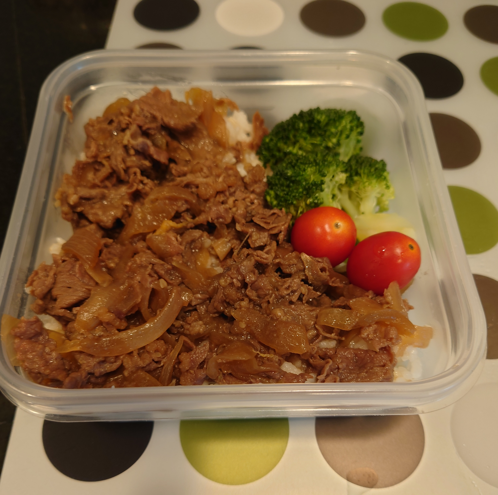

Beef Bowl Recipe

Meaning To Our Family
This is a recipe that we eat at least once a month. This is a
good dinner menu, but it also works very well in lunch boxes.
Ingredients
| hot water |
400ml |
| shredded beef brisket |
300g |
| onion |
1 |
| ginger |
1 or 2 teaspoons |
| soy sause |
4 tablespoons |
| rice wine |
3 tablespoons |
| sugar |
3 tablespoons |
| salt |
1 teaspoon |
| tuna broth |
2 teaspoons |
Instrctions
- Add tuna broth and sliceed onion in the hot water and
simmer until the onion gets a little softer.
- Add rice wine, sugar, salt, soy sause and the beef.
Stir them and close the lid.
- After 10 minutes in medium heat, add ginger leave it for
a minute.
- Then check the taste and adjust the seasoning.
After you pour it on top of rice, you are finished!